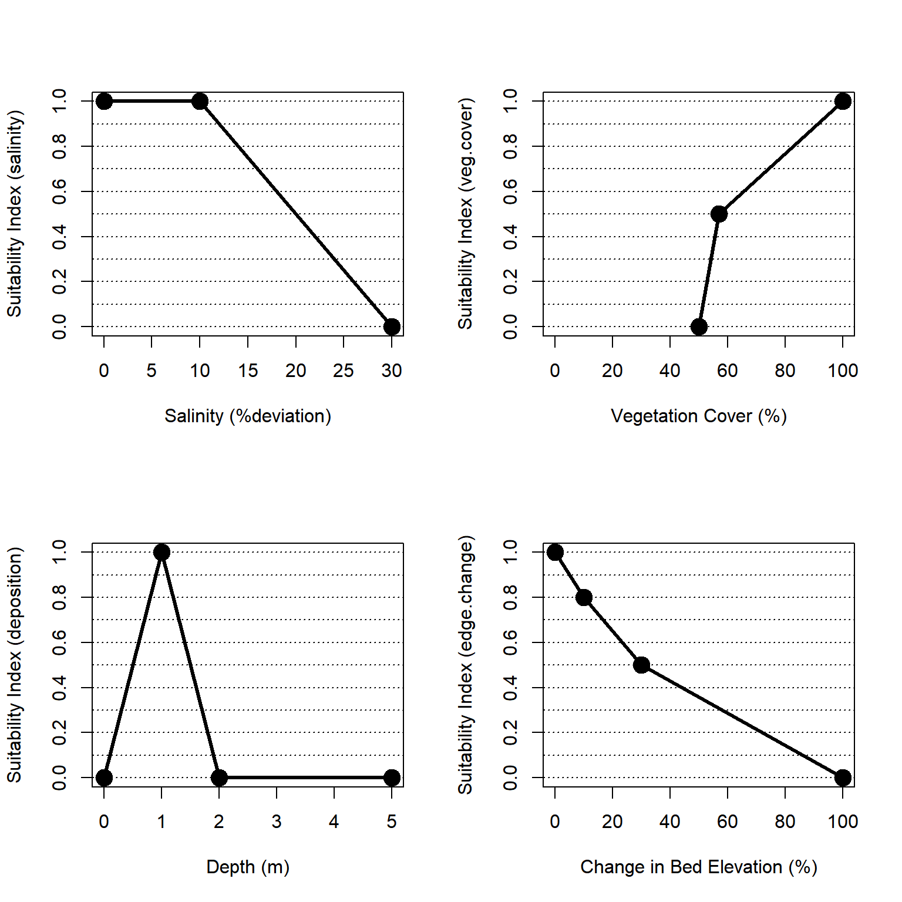
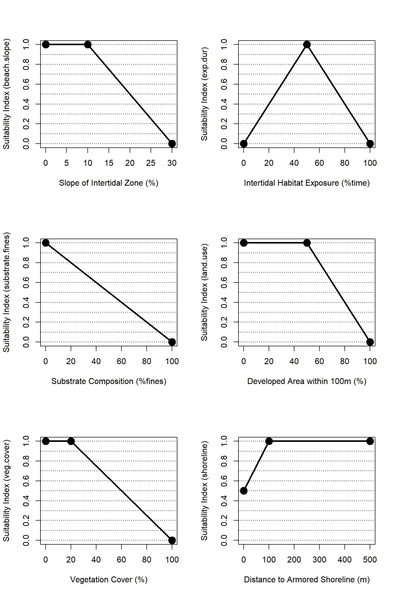
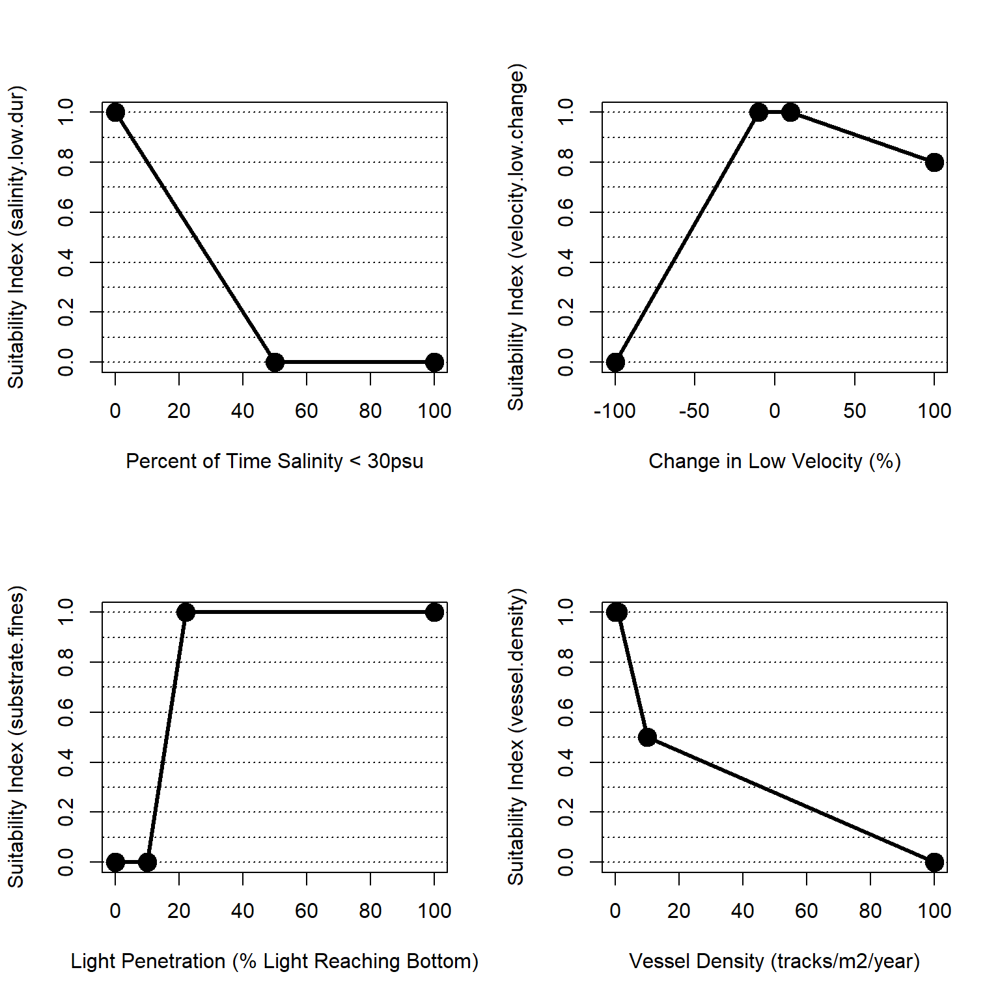

Chapter 3 Quantification
The quantification phase of ecological model development formalizes a conceptual model in terms of mathematical relationships, model parameters, and a numerical algorithm (Grant and Swannack 2008). This chapter describes the NYBEM relative to model structure, associated numerical tools, and the theoretical underpinnings of the sub-models. In general, the overarching quantitative architecture of the NYBEM can be summarized in three major elements (Figure 4.1). First, model inputs are assembled in a geospatial database. Second, the model code is prepared as a “package” in the R Statistical Software. Finally, the model outputs habitat quantity and quality as well as habitat units for each patch in the model domain.
Quantitative architecture of the NYBEM.
Input variables to NYBEM consist of three major groups of data layers. First, the spatial extent of a given model run must be defined. The NYBEM is constrained to applications within the region of the New York Bight watersheds (Section 2.1). Within that region, a focal area for the simulation must be specified, which can consist of a particular project boundary (e.g., NJBB or HATS) or a user-specified domain (e.g., a particular back bay). Within that focal area, the downstream and upstream extents of the model are specified based on the 20m ocean depth contour and Mean Higher High Water (MHHW), respectively. The second major group of variables consists of hydrodynamic inputs. These inputs may be computed for varying temporal windows (e.g., a month, a year, or a decade) depending on the project focus, and the inputs could be provided by a variety of hydrodynamic models or empirical data sources. Hydrodynamic variables characterize the bed elevation, water surface, salinity, and velocity distributed throughout the project area. Third, a variety of other environmental variables are compiled from national and regional data sets to inform habitat quality calculations.
All model code for the NYBEM is contained within an R-package (nybem, available via github). Generally speaking, a package can be thought of as a fundamental unit of code that can include functions, data, documentation, and tests (Wickham and Bryan 2019). Packages then provide a transportable and reproducible mechanism for code sharing and publication. The nybem package contains nine functions and associated testing trials. This chapter describes each function in detail, but they can be summarized briefly as:
nybem.domain: This function defines the model domain based on regional extent of the New York Bight watersheds, a user-specified focal area, a downstream extent of a 20m ocean depth contour, and an upstream extent based on bed elevations less than MHHW.
patch.mapper: This function maps the extent of NYBEM’s six major ecosystem types (Table 3.2) based on user-specified data layers for bed elevation, MLLW, MTL, MHHW, and salinity.
patch.rasterizer: This function rasterizes the output ofpatch.mapperbased on a specified grid resolution and aligns that layer with a specified spatial coordinate system.
fre.tid: This function computes habitat quality for any freshwater, tidal patches.
est.int: This function computes habitat quality for any estuarine, intertidal patches.
est.sub: This function computes habitat quality for any estuarine, subtidal patches.
mar.int: This function computes habitat quality for any marine, intertidal patches.
mar.sub: This function computes habitat quality for any marine, subtidal patches.
mar.deep: This function computes habitat quality for any marine, deepwater patches.
The first three functions can largely be thought of as pre-processing fundamental input data and mapping the extent of the six ecosystem types. For purposes of model development, these are relatively straight-forward and will be documented collectively. The latter six functions each compute a 0 to 1 metric of ecosystem condition (i.e., habitat quality) based on a unique set of input variables, equations, and parameters. Each of these habitat quality sub-models followed a consistent set of development steps, which are documented throughout this chapter and briefly describe here. Preliminary variables were identified at a series of interagency workshops through a series of conceptual modeling exercises (Appendix A). Additional variables were added based on taxa-specific habitat suitability models (i.e., USFWS “blue books”), relevant tools (e.g., New England Marsh Model), and literature search. A conceptual model was then developed for each ecosystem type to better understand how key variables related an influenced each other. An overarching list of regional and national data sets were also compiled to assure that model variables could be assessed throughout the broad spatial extent of the New York Bight. Potential model variables were compiled along with the rationale for inclusion or exclusion. Finally, a numerical “suitability index” was developed for each variable remaining in the sub-model based on existing suitability indices, published thresholds / responses, and professional judgment.
Ultimately, the nybem allows users to assess the extent and integrity of the six major ecosystem types represented in the NYBEM. The size and quality of a given habitat patch can provide useful metrics in their own right, or they may be summarized as an overarching “habitat unit” (i.e., the quantity of habitat in acres * patch quality assessed on a 0 to 1 scale).
3.1 Pre-Processing Functions (I)
Need Dougherty’s help on this one.
Insert pre-amble text. This chapter describes each function in detail, but they can be summarized briefly as:
3.1.1 Define Model Domain
nybem.domain: This function defines the model domain based on regional extent of the New York Bight watersheds, a user-specified focal area, a downstream extent of a 20m ocean depth contour, and an upstream extent based on bed elevations less than MHHW.
#Functions for rasterizing habitat types
nybem.domain <- function(NYBightWatersheds, Ocean20mDepth, bedelev, MHHW){
#Insert code
}3.1.2 Map Habitat Extent and Type
patch.mapper: This function maps the extent of NYBEM’s six major ecosystem types (Table 3.2) based on user-specified data layers for bed elevation, MLLW, MTL, MHHW, and salinity.
In NYBEM, the quantity and quality of each ecosystem type may be assessed separately. For instance, ecosystems could be rapidly delineated from empirical data for the existing condition (e.g., field or tide gauge) or modeled hydrodynamic data for future conditions or proposed management actions. These delineated ecosystems can be summarized as an overarching habitat quantity in acres. Ecosystem quality may then be assessed based on patch-specific data and known thresholds in ecological response (e.g., on a normalized 0 to 1 scale indicating ecological quality or function). The product of habitat quality and quantity provides a consistent metric across ecosystem types (i.e., “habitat units”). Here, the terms “habitat” and “ecosystem” are used synonymously to indicate a given patch.
The criteria for delineating ecosystems (Table 3) were subsequently programmed as a suite of logic statements for identifying the salinity zone, tidal zone, or ecosystem / habitat type for any given patch. The following functions input salinity, bed elevation, mean lower low water (MLLW), and mean higher high water (MHHW) and output a numerical code indicating salinity, tidal, and habitat zone as follows.
- Tidal Zone: 1 = deep, 2 = subtidal, 3 = intertidal, and 4 = upland
- Salinity Zone: 1 = marine, 2 = estuarine, or 3 = freshwater
- Habitat Zone / Ecosystem Type: 1 = upland, 2 = marine, deepwater, 3 = marine, subtidal, 4 = marine, intertidal, 5 = estuarine subtidal, 6 = estuarine intertidal, or 7 = freshwater
#Functions for isolating habitat types
##########
#Labels for tidal zones
ZoneTidal <- c("Deep", "Subtidal", "Intertidal", "Upland")
#Create function for isolating tidal zones
set.tidal.zone <- function(bedelev, MLLW, MHHW){
#Assign zone
tidalzone <- ifelse(bedelev <= -2, 1,
ifelse(bedelev <= MLLW, 2,
ifelse(bedelev <= MHHW, 3,
ifelse(bedelev > MHHW, 4, NA))))
#Send output
tidalzone
}
##########
#Labels for salinity zones
ZoneSalinity <- c("Marine", "Estuarine", "Fresh")
#Create function for isolating salinity zones
set.salinity.zone <- function(salinity){
#Assign zone
salinityzone <- ifelse(salinity >=30, 1,
ifelse(salinity < 30 & salinity >= 0.5, 2,
ifelse(salinity < 0.5 & salinity >= 0, 3, NA)))
#Send output
salinityzone
}
##########
#Labels for habitat zones
ZoneHabitat <- c("Upland", "Marine.Deep", "Marine.Subtidal", "Marine.Intertidal", "Estuarine.Subtidal", "Estuarine.Intertidal", "Freshwater")
#Create function for isolating habitat zones
set.habitat.zone <- function(tidalzone, salinityzone){
#Assign zone
habitatzone <- ifelse(tidalzone == 4, 1,
ifelse(salinityzone == 1 & tidalzone == 1, 2,
ifelse(salinityzone == 1 & tidalzone == 2, 3,
ifelse(salinityzone == 1 & tidalzone == 3, 4,
ifelse(salinityzone == 2 & tidalzone == 1 | tidalzone == 2, 5,
ifelse(salinityzone == 2 & tidalzone == 3, 6,
ifelse(salinityzone == 3 & tidalzone == 1 | tidalzone == 2 | tidalzone == 3, 7, NA)))))))
#Send output
habitatzone
}3.1.3 Rasterize Habitat Patches
patch.rasterizer: This function rasterizes the output of patch.mapper based on a specified grid resolution and aligns that layer with a specified spatial coordinate system.
#Functions for rasterizing habitat types
patch.rasterizer <- function(patch.mapper.output, grid.resolution, my.coordinate.system){
#Insert code
}3.2 Freshwater, Tidal Submodel (fresh.tid) (I)
Mahan and McKay to edit text.
1-2 paragraphs providing background on the ecosystem type. Physical properties. Typical ecological functions and ecosystem services.
Present and describe the conceptual model for this system.
START PARAGRAPH HERE
FIGURE
Describe the main ideas being captured in the model. Summarize as table. Present suitability index curves, which are described in subsequent sections.
TABLE
FIGURE WITH SUITABILITY CURVES
Present the overarching habitat suitability index equation.
EQUATION
3.2.1 Variable-1
2-5 paragraphs presenting three main ideas.
Provide some general context for this variable’s role in ecosystem function and condition.
Describe how this variable is assessed and quantified in NYBEM.
Present the equation for assessing the suitability index.
EQUATION
3.3 Estuarine, Intertidal Submodel (est.int) (I)
Check equations.
Estuarine environments include marine water that has been diluted by freshwater runoff from the land (Prosser et al. 2018). Due to tidal influence, intertidal ecosystems are found between high and low tide, experiencing varying land and sea influences, whereas subtidal ecosystems are constantly submerged. The estuarine intertidal ecosystem considers areas with salinity values greater than 0.5 ppt to 30 ppt and elevation from MHHW to MLLW. Plant, animal, and microorganism populations, as well as their nonliving surroundings, interact as a working unit in intertidal ecosystems, which are exposed at low tides (Citation). Within the estuarine intertidal ecosystem, ecological processes are linked to physical and chemical characteristics. These characteristics can experience change under anthropogenic and climatic pressures that deviate from the homeostasis, or baseline, habitat condition. This can result in reduced habitat suitability across the estuarine intertidal ecosystem.
Tidal marshes are vegetated intertidal ecosystems found at the land-sea interface that serve as crucial transition zones for marine, freshwater, and terrestrial processes (Colombano et al. 2021). Tidal marshes originated in a range of coastal and estuarine environments, and their location exposes them to a number of environmental factors (e.g., ocean currents, watershed hydrology) and environmental gradients (e.g., salinity)(Lauchlan and Nagelkerken 2020). Broad-scale climatic changes are already affecting the timing, size, and duration of naturally varying environmental variables in estuarine, and freshwater settings. Understanding the changes in environmental stressors from climate change and sea level rise (SLR) on the tidal marsh ecosystem is critical to evaluate changes after the addition of storm surge barriers.
The following variables are accessible to the estuarine intertidal submodel portion of the NYBEM: salinity, episodic sediment deposition, edge erosion, vegetative cover, development of adjacent uplands, and the presence/absence of shoreline armoring.
Conceptual model for the estuarine, intertidal submodel.
The overall habitat suitability of the marine, intertidal zone may then be aggregated into a single metric via an arithmetic mean of suitability indices for these six metrics.
\(I_{est.int} = \frac{salinity + erosion + veg.cover + deposition + upland + shoreline}{6}\)
Where \(I_{est.int}\) is an overarching index of ecosystem quality for the marine intertidal zone, \(salinity\) is a suitability index relative to salinity, \(erosion\) is a suitability index relative to the edge erosion, \(veg.cover\) is a suitability index relative to vegetative cover, \(deposition\) is a suitability index relative to episodic sediment deposition, \(upland\) is a suitability index relative to adjacent upland land uses, and \(shoreline\) is a suitability index relative to shoreline armoring. All indices are quality metrics scaled from 0 to 1, where 0 is unsuitable and 1 is ideal.

3.3.1 Salinity
Salinity affects physical and chemical processes such as flocculation and the amount of dissolved oxygen (DO) in the water column, as well as the types of organisms that may exist in an estuary (Citation). Estuarine organisms have evolved to cope with salinity fluctuations. Those that prefer fresher water at the upstream river end of the estuary to species that prefer saltier water at the downstream sea end usually form a gradient. Estuarine plants and animals suffer when extremely high salinities persist for lengthy periods of time. During instances of heavy freshwater inflows from rivers, harm might also occur. Extreme events are the issue in both scenarios.
Higher salinity, lower nutrient intake, and lower sediment inputs associated with extremely low river inflow can stress or kill plants and animals, limit productivity owing to nutritional deficiency, and destroy marshes due to low sediment input. Low estuary salinity kills marine creatures when river inflow is extremely high; excessive nutrient inputs contribute to algae blooms; and increased sediment input suffocates sea grasses and oysters (Hopkinson et al. 2018).
The NYBEM estuarine intertidal submodel relies on a percent in deviation of salinity regime to represent change in tidal inundation and freshwater flow input across the ecosystem. As the percentage of deviation from the baseline salinity regime increases, habitat suitability for taxa within the estuarine intertidal ecosystem will decrease.
\[salinity = salinity.metric.TBD\]
Where \(salinity\) is a suitability index relative to salinity and…
3.3.2 Edge Erosion
Climate change, pollution, and other anthropogenic effects are putting more pressure on terrestrial and marine ecosystems. Coastal flooding and shoreline erosion will likely become more common as sea levels rise and storm surges shift as a result of climate change. There is fear that tidal wetlands will drown as sea levels rise and sediment supplies to the shore decline across the world. Marsh sediment budgets are a geographically integrated measure of opposing constructive and destructive forces: a surplus of sediment can lead to vertical growth and/or lateral expansion, while a shortfall can lead to drowning and/or lateral contraction (Ganju et al. 2017). Many estuarine marshes face sediment deficits along the shoreline as a result of increased edge erosion. Edge degradation causes morphological changes that make it easier for waves to propagate to the marsh borders and promote the resuspension and export of sediments from the estuary (Li, Leonardi, and Plater 2019).
The percent change in edge erosion throughout the estuarine intertidal ecosystem is used to represent habitat suitability. When the percentage of shear stress for erosion is 10% or greater, erosion occurs, resulting in a reduction in total marsh area and an increase in open water area. At a rate of 30% shear stress from erosion, the habitat will no longer be suitable (habitat suitability equals zero.
\[erosion = \begin{pmatrix} 1.0 & vel_{delta}=-50-10\\ -0.025*urban_{per}+1.25 & vel_{delta}=10-50 \end{pmatrix}\]
Where \(erosion\) is a suitability index relative to edge erosion and \(vel_{delta}\) is the percent change in velocity relative to the existing condition.
3.3.3 Vegetation Cover
Vegetation provides various ecological services within the estuarine intertidal ecosystem, including providing a fish nursery environment, feed for migratory birds, nutrient cycling, carbon storage, and sediment stability, therefore reductions of vegetative cover can have a significant impact on shallow marine ecosystems. Seagrass meadows are disappearing at an alarming rate in shallow coastal and estuary marine environments, with losses similar to tropical rainforests, mangroves, and coral reefs due to anthropogenic and climate stress (Walter et al. 2020).
The loss of vegetative cover changes the dynamics near the seabed in locations where there was formerly vegetation, and transforms huge areas of the estuary from a deposition and accretion-friendly environment to one that favors suspension and erosion. For estuaries, such high amounts of suspended particles and sediment-associated nutrients create a variety of environmental management issues. These include alterations in invertebrate and macrophyte populations as well as a general deterioration of aquatic environments (Cotton et al. 2006).
For the NYBEM, habitat suitability increases as the percentage of vegetative cover increases throughout the habitat. When vegetative cover is equal to 100 percent, the estuarine intertidal ecosystem will have a high suitability value (greater than 90%).
\[veg.cover = 0.9*cover_{per}+0.1\]
Where \(veg.cover\) is a suitability index relative to vegetation cover and \(cover_{per}\) is the percent of vegetation coverage.
3.3.4 Episodic Sediment Deposition
Estuaries are efficient sediment traps where near-bottom circulation causes sediment flow convergence during the transition from brackish to fresh water, resulting in local maxima in suspended sediment concentration (SSC) and deposition rates. Marine materials are deposited from the continental shelf into estuarine habitats. Due to disparities in tidal currents (ebb versus flood tide), sediments are carried to supply sediment on varying timeframes. In the estuarine intertidal ecosystem, sediment transport capacity is mostly determined by river discharge and by the timing of discharge events in relation to the spring–neap cycle and subtidal oscillations in sea level (Prosser et al. 2018).
Due to the retreat of the salinity intrusion and increasing bed pressures, sediment deposition episodes can induce considerable bed resuspension in the estuary. These periodic flood and storm events are major drivers in sediment dynamics and contribute disproportionately to the total sediment discharge (Ralston et al. 2013). The duration of high-discharge episodes in relation to the estuarine reaction time, a feature that fluctuates seasonally with discharge and estuarine length, also affects sediment transport capacity (Palinkas et al. 2014). These short-term events can cause changes in the local biological community and affect seabed stability and strength.
In coastal and estuary environments across the world, harmful algal blooms (HABs) have substantial economic, public health, and ecological consequences. The influx of additional nutrients following an episode of sediment deposition have been known to cause harmful algal blooms (HABs)(Ralston et al. 2014). Further, the frequent upturn of sediment can displace biological organisms. The most significant foreshore processes for the horseshoe crab are episodic storms, which impact erosion and accretion cycles, swash and wave processes, which affect sediment mixing and activation, and tides, which affect water infiltration and exfiltration through the sediment (Nancy Jackson, Karl Nordstorm, and David R. Smith 2010). During storms, erosion of the shoreline can result in the removal of material from the upper foreshore and deposition on the lower foreshore, or the foreshore moving horizontally landward.
The NYBEM estuarine intertidal submodel utilizes a depth threshold that represents optimal episodic sediment deposit levels. Sediment supply is a key determinant of long-term marsh stability. The percent of time the estuarine depth is greater than MHHW is an indicator of habitat suitability.
\[deposition = deposition.metric.TBD\]
Where \(deposition\) is a suitability index relative to episodic sediment deposition and…
3.3.5 Developement of Adjacent Upland
The development of uplands within a watershed can have a direct and indirect impact on a variety of essential aspects in estuarine intertidal ecosystems. The combination of coastal erosion and upland development causes a “coastal squeeze,” in which low-lying, intertidal regions that would usually recede inland in the face of sea-level rise are diminished because man-made structures (e.g. shoreline armoring) prevent such retreat (Prosser et al. 2018). This means that tidal marshes will need to shift upslope onto nearby uplands to survive in a period of rapid sea-level rise. Further, the top boundary of this migratory zone’s tidal inundation is very unpredictable over time and may be rising faster than mean sea level. Land management methods on the tidal marsh’s upland border can help or hinder ecosystem migration in response to increasing sea levels (Anisfeld, Cooper, and Kemp 2017).
Both developed and undeveloped uplands can experience ecological stress as a result of climate change and land use changes (e.g. addition of storm surge barriers, shoreline armoring). Climate change’s effects on ocean and watershed systems are intertwined and set to interact. This is especially true in tidal marshes, which are biogenic environments that are sculpted by tidal and fluvial processes and are dynamic and architecturally complex (Colombano et al. 2021). Multiple stressors can affect the development of adjacent uplands such as low-flows, flooding, and reduced stream continuity (Talke and Jay 2020).
For the NYBEM, habitat suitability is modeled for an increase in development for adjacent uplands. When the percentage of developed adjacent uplands is greater than 10%, habitat suitability in the estuarine intertidal ecosystem declines. When the development of adjacent upland reaches 100% of the estuarine intertidal ecosystem, the habitat will no longer be considered suitable.
\[land.use = \begin{pmatrix} 1.0 & urban_{per}=0-50\\ -0.02*urban_{per}+2 & urban_{per}=50-100 \end{pmatrix}\]
Where \(land.use\) is a suitability index relative to adjacent upland land uses and \(urban_{per}\) is the percent of adjancent upland in developed (i.e., urban) land uses within 500m.
3.3.6 Shoreline Armoring
Natural biological processes and human-induced changes to the estuarine intertidal shoreline boundary are considered as components to a complex ecological system. The mean high-tide line is commonly used to determine shoreline boundaries and extent (Kittinger and Ayers 2010). Shoreline modification called armoring has resulted in a considerable loss of coastal ecosystems from erosion, as well as a reduction in the resilience of these systems to disturbance (Kittinger and Ayers 2010). Shoreline armoring involves placing hardened structures like bulkheads and revetments along the shoreline and as sea levels rise, these structures can prevent coastal marshes from spreading upland over time (Gardner and Johnston 2021).
Armoring is widespread throughout the United States, with the most extensive armoring being found near urban areas (Morley, Toft, and Hanson 2012). Shoreline armoring occupies 50-70% of shorelines along urban coastal areas (Dugan et al. 2018). Increasing shoreline development pressure and predicted sea-level rise suggest that the demand for shoreline armoring will continue to rise and expand throughout the future (Gardner and Johnston 2021). Shoreline armoring is correlated with decreased habitat complexity and a reduction in connectivity to adjacent habitats (Morley, Toft, and Hanson 2012).
The environmental consequences of armoring are context dependent, relying on characteristics of the environment and armoring structural factors (Dugan et al. 2018). The type of structure placed (e.g., seawalls, bulkheads, revetments) and its relative placement on the coast profile will influence the biological reactions to armoring. Estuarine intertidal habitats that lack shoreline armoring have increased habitat suitability. For the NYBEM, the presence and absence of shoreline armoring will be utilized to derive information about the ability for multiple taxa to use the shoreline as migratory pathways.
\[shoreline = \begin{pmatrix} 0.05*dist_{armor}+0.5 & dist_{armor}=0-100m\\ 1.0 & dist_{armor}>100m \end{pmatrix}\]
Where \(shoreline\) is a suitability index relative to shoreline armoring and \(dist_{armor}\) is the distance to the nearest armored shoreline in meters.
3.4 Estuarine, Subtidal Submodel (est.sub) (I)
Swannack, Reif, and Saltus to write.
This section presents development of the Estuarine Subtidal Model (ESM). Estuarine subtidal habitat was defined as areas with elevations between MLLW and -2m (-6ft) with salinities ranging from 0.5 to 30. In general, the ESM seeks to capture the general condition and trajectory of the estuarine subtidal habitat using three different taxa (oysters, seagrass, and clams) as indicators of ecosystem quality. Each taxa provides critical contributions to the overall quality of the estuarine subtidal habitat yet does so independently from the other two indicators. Given that, we quantified habitat quality independently for each taxon. Each taxa is represented conceptually as part of the overall ecosystem, but quantified as an independent submodel.
Habitat quality was modeling using a multivariate index-based approach. Each variable received a suitability score ranging from 0 to 1 inclusive. For each taxa, Suitability scores were integrated into an overall habitat quality using a geometric mean.
A conceptual model of the estuarine subtidal habitat was developed at a mediated modeling workshop This conceptual model represented the major components affecting the quality of the ESH (Figure XX). Three main categories of drivers were identified: physical (water quality, velocity, sedimentation), anthropogenic (vessel traffic and development stress), and biological (SAV, benthic organisms and fish) with interactions were among the categories (Figure 1).
FIGURE
Figure 1. Conceptual model of the overall drivers of ecosystem quality in estuarine subtidal habitat
Further meetings with the PDT led to refinements in the conceptual model as follows:
It was assumed that essential fish habitat would be present if oysters, SAV, and clams were present, so this variable was removed.
Depth and light are not expected to change based on projects and were removed. However, light availability, which is necessary for SAV growth, can be impacted by turbidity, so this was used as a proxy for light.
Substrate type is a major driver of SAV, oysters, and clams. Each taxa requires different substrates, so this variable was reconceptualized into three categories.
Salinity is a critical variable for oysters and was added to the conceptual model.
Water quality is an important measure, but data is unavailable at the current time, so this was removed from the model. Turbidity is being used as a proxy.
Vessel traffic can be used as a proxy for variable development stress, under the assumption that more vessel traffic correlates to larger development pressures.
FIGURE
Figure 2. Updated conceptual model
TABLE
FIGURE WITH SUITABILITY CURVES
Present the overarching habitat suitability index equation.
EQUATION
The quantification phase of ecological model development formalizes the conceptual model in terms of mathematical relationships, model parameters, and a numerical algorithm (Grant and Swannack 2008). This section describes the ESM structure and provides justification for the inclusion of the variables. The overall model consists of five parameters (substrate, development stress, water temperature, salinity, and shear stress) that apply to one or more of the taxa modeled (Figure 2).
3.4.1 Oysters
The oyster submodel is represented by the Oyster Habitat Suitability Index Model (OHSIM; Swannack et al., 2014), an EcoPCX-certified model for the Eastern oyster (Crassostrea virginica). OHSIM is a spatially-explicit, grid-based index model that uses a series of linear equations to calculate habitat suitability for C. virginica. The model consists of four variables: substrate, and three measure of salinity—mean salinity during spawning season, in which spawning and spat set have a higher optimal salinity than for survival of adults, annual mean salinity, which is the expected range over which adult oysters are viable, and minimum annual salinity, which defines the impacts of high mortality events resulting from lower salinities resulting freshwater influxes (Soniat 2012). Variables are briefly described below. For more details, refer to Swannack et al. 2014 and EcoPCX documentation. The functional forms of each variable type are presented in Figure 3.
3.4.1.1 Oyster Substrate
Substrate is represented as the percent of the bottom covered with hard substrate, such as existing reefs, or other hard surfaces. We assume that oyster habitat suitability increases linearly from 0 to 100% clutch cover (Equation 1, Figure 3A).
EQUATION
3.4.1.2 Salinity
Mean Salinity during Spawning Season (MSSS) represents the mean monthly salinity from May through September. MSSS reflects the higher optimal salinities required for spawning and larval stages (Butler 1954, Cake 1983). The relationship between MSSS and its HSI value is formulated as a linear step-function (Figure 3B) as follows:
Minimum Annual Salinity (MAS) is the minimum value of the 12 monthly mean salinities. This variable is essential to describe freshwater impacts (e.g., freshets, high rainfall years, or freshwater diversions) on oysters and is analogous to the frequency of killing floods variable used by Cake (1983). The relationship between MAS and its suitability index is formulated as a linear step-function (Figure 3C) as follows:
Annual mean salinity (AS) represents the range of salinities over which adult oysters are viable (Cake 1983). The relationship between AS and its suitability index is formulated as a linear step-function (Figure 3D) as follows:
Present the equation for assessing the suitability index.
EQUATION
3.4.1.3 Overall Oyster Suitability
Overall oyster suitability index (OSI) is determined as the geometric mean of the SI values for the four component variables. If any component suitability is 0 (unsuitable), OSI is 0. OSI is calculated as:
Where HSIi represents the HSI value per cell for each environmental variable i and n represents the number of variables included in the model. OSI results should be categorized as 0 – 0.25 (low), 0.25 – 0.55 (low/medium), 0.55 – 0.85 medium/high, and 0.85 – 1 (high), similar to the categories described by Soniat and Brody (1988) and Brooks (1997).
Figure 3. Relationships between Oyster Suitability Indices (OSI) and (A) percentage of area covered with hard substrate (% Hard Substrate), (B) Mean salinity during spawning season from May through September (MSSS), (C) Minimum Annual Salinity (MAS), and (D) Mean Annual Salinity (AS). % Hard substrate was measured as the percentage of each grid cell covered in hard substrate. Figure was modified from Swannack et al. (2014).
3.4.2 Submerged aquatic vegetation (SAV)
The SAV submodel is represented by four variables critical for growth and reproduction of seagrass, (1) substrate, (2) water temperature, (3) light availability and (4) development stress (Figure 2). Suitability scores are represented either as discrete categories or as step functions with linear interpolations between the steps.
3.4.2.1 Seagrass Substrate
Substrate is represented as the presence of soft-bottom sediments conducive for seagrass growth. Optimal conditions for the seagrass growth in the study region were identified as non-cobble substrates with less than 70% fine sediment. Soft-bottom, non-cobble substrates with greater than 70% fine sediment were considered suboptimal/adequate. Suitability scores for seagrass substrate are represented in Figure 4 and are quantified as follows:
3.4.2.2 Temperature
Like all vascular plants, temperature is a major driver for seagrass viability. At low temperatures, physiological processes are constrained, while metabolic temperature increases with higher temperatures (Staehr and Borman, 2011). At temperatures above optimal range for seagrass, metabolic activity is significantly reduced or halted as a result of protein denaturation or inactivation (Atkin and Tjoelker, 2003; Jensen, 2000). The functional form for the seagrass-temperature functional form was based on the following empirical studies.
Peak biomass and shoot density occur in late spring as water temperatures rise to 25 °C, (Orth et al., 2007)
Shoot production rapidly declines and leaf senescence occurs when water temperature exceed 25°C (Orth et al., 2007)
Subsequent shoot production occurs when temperatures drop below 25 °C and continues until a dormancy phase is reached when water temperature drops below 10 °C (Orth et al., 2007)
Photosynthesis decreases dramatically when temperatures exceeded 19 °C in Chesapeake Bay (Evans et al., 1986). Additionally, the presence of eelgrass in the Gulf of California as an annual winter species is determined by the average water temperatures which range between 17°C and 25°C (Meling-Lopez and Ibarra-Obando, 1999).
The relationship between Temperature and its suitability index for submerged aquatic vegetation represented in Figure 5 and is formulated as a linear step-function (Figure 5) as follows
Figure
Figure 5. Suitability index curve for seagrass and temperature relationship
3.4.2.3 Light
Light availability drives photosynthesis in SAV. Light attenuates within the water column based on depth and water clarity (i.e., the deeper and more turbid the water, the less light reaches the bottom). For the ESM, light availability depends on depth and TSS and is calculated algorithmically, then converted into a suitability index. Light availability (Iz) at the plant surface is estimated based on van Nes et al., (2003) is calculated as:
where PAR represents the photosynthetically active radiation at the surface, Kd is the light attenuation coefficient for water clarity matching the conditions of the study site, and z is water depth. Light at the plant surface is converted to a percent of light at the plant (following equation 35), which is used to calculate a suitability score. The relationship between Percent light available (PLA) and its suitability index for submerged aquatic vegetation is represented in Figure 6 and is formulated as a linear step-function as follows:
Figure
Figure 6. Suitability score for the relationship between percent light available (PLA) in the water column and habitat suitability for SAV
3.4.2.4 Development Stress
Human-mediated disturbances (e.g., urban development, increased boat traffic, etc) can negatively impact SAV abundance. We represent these disturbances as an aggregated categorical variable development stress, which is quantified through a proxy of boater traffic per grid cell. Boater traffic is obtained from the Automatic Identification System database. Lower traffic (less than 10 tracks per cell) is optimal and the suitability decreases with increasing boater traffic. Suitability scores for development stress are represented in Figure 7 and are quantified as follows:
3.5 Marine, Intertidal Submodel (mar.int) (I)
Marine, intertidal ecosystems include the areas of high salinity (> 30 psu) bracketed by tidal limits of the mean higher high water (MHHW) and mean lower low water (MLLW). In the context of NYBEM, these systems tend to directly front the Atlantic Ocean as beaches or occur in high salinity zones near inlets.
Figure XX presents a conceptual model of the marine, intertidal ecosystem. This nearshore ecosystem is strongly influenced by two major pressures, the physical drivers of the ocean environment (e.g., currents, sediment transport) and human uses of the system (e.g., beaches and associated upland development). Ecologically, this ecosystem hosts a variety of species of management interest such as seabeach amaranth, horseshoe crabs, shorebirds (e.g., piping plover, terns, red knot), and sea turtles.
Coastal storm risk management actions have the potential to affect this ecosystem through two primary mechanisms. First, some risk management actions (e.g., storm surge barriers) could be directly constructed in this area. Second, large-scale features have the potential to alter coastal dynamics to indirectly, although this affect may occur to a lesser extent given the overarching dominance of ocean effects.

Conceptual model for the marine, intertidal submodel.
The tension between human uses of this landscape and ecological outcomes has long been acknowledged, and many models have been developed to assess ecological outcomes in marine, intertidal zones of the region. This submodel drew heavily from four general bodies of knowledge, specifically:
- USFWS Habitat Evaluation Procedure models: tern (Carreker 1985, USFWS 2001), hard clam (Mulholland 1984), plover (USFWS 2001), horseshoe crab (Brady and Schrading 1996, USFWS 2001), red knot (USFWS 2001).
- Other habitat suitability models: plover (Farmer et al. 2000, Seavey et al. 2011), horseshoe crab (Avissar 2006, Jackson et al. 2010, Lathrop et al. 2013), amaranth (Sellars and Jolls 2007), sea turtles (Dunkin et al. 2016)
- Fire Island to Montauk Point Habitat Evaluation Procedure OceanBeach Sub-Model (USACE 2009)
- Empirical data studies of the system: Virginia Tech shorebird program (Hermanns et al. 2018), Rutgers horseshoe crab mapping (Lathrop et al. 2013), international shorebird survey (Manomet)
Four classes of processes and dynamics were identified from a review of these models and studies: long-term and large-scale wave and sediment dynamics, beach morphology, benthic food supplies, and the role of this system as a corridor between aquatic and upland environments. From these processes, six surrogate metrics were identified, which collectively reflect the condition of the marine, intertidal zone. Notably, variables reflecting wave and sediment dynamics are minimally included in this phase of modeling due to assessment challenges. The sections below describe each metric and the rationale in detail, but briefly:
- Beach slope was identified as a proxy for larger effects on overall morphology.
- The proportion of time a beach is exposed provides a metric of benthic food supplies and availability of foraging habitat.
- An assessment of fine substrate provides a metric of benthic foraging as well as physical properties of the beach.
- Upland land use intensity and shoreline armoring metrics describe the general human use pressures on a given system and viability of corridor functions.
- A vegetation cover metric assesses the viability of the corridor relative to different taxa movement requirements.
The overall habitat suitability of the marine, intertidal zone may then be aggregated into a single metric via an arithmetic mean of suitability indices for these six metrics.
\(I_{mar.int} = \frac{beach.slope + exp.dur + substrate + land.use + veg.cover + shoreline}{6}\)
Where \(I_{mar.int}\) is an overarching index of ecosystem quality for the marine intertidal zone, \(beach.slope\) is a suitability index relative to beach slope, \(exp.dur\) is a suitability index relative to the duration of beach exposure, \(substrate\) is a suitability index relative to fine substrate, \(land.use\) is a suitability index relative to adjacent upland land uses, \(veg.cover\) is a suitability index relative to vegetative cover, and \(shoreline\) is a suitability index relative to shoreline armoring. All indices are quality metrics scaled from 0 to 1, where 0 is unsuitable and 1 is ideal.

3.5.1 Beach Slope
McKay to resume writing here.
2-5 paragraphs presenting three main ideas.
Provide some general context for this variable’s role in ecosystem function and condition.
Describe how this variable is assessed and quantified in NYBEM.
Present the equation for assessing the suitability index.
\[beach.slope = \begin{pmatrix} 1.0 & slope_{per}=0-10\\ -0.05*slope_{per}+1.5 & slope_{per}=10-30\\ 0.0 & slope_{per}>30 \end{pmatrix}\]
Where \(beach.slope\) is a suitability index relative to beach slope and \(slope_{per}\) is the slope of the beach perpendicular to the mean tide line in percent.
3.5.2 Exposure Duration
2-5 paragraphs presenting three main ideas.
Provide some general context for this variable’s role in ecosystem function and condition.
Describe how this variable is assessed and quantified in NYBEM.
Present the equation for assessing the suitability index.
\[exp.dur = \begin{pmatrix} 0.02*t_{exp} & t_{exp}<50\\ -0.02*t_{exp}+2 & t_{exp}>50 \end{pmatrix}\]
Where \(exp.dur\) is a suitability index relative to exposure duration and \(t_{exp}\) is the percent of time an intertidal area is exposed.
3.5.3 Substrate
2-5 paragraphs presenting three main ideas.
Provide some general context for this variable’s role in ecosystem function and condition.
Describe how this variable is assessed and quantified in NYBEM. DO SUBSTRATE DATA EXTEND INTO THE INTERTIDAL ZONE?
\(substrate = -0.1*fines_{per}+1\)
Where \(substrate\) is a suitability index relative to fine substrate and \(fines_{per}\) is the percent of fine substrate (silt and clay).
3.5.4 Upland Land Use
2-5 paragraphs presenting three main ideas.
Provide some general context for this variable’s role in ecosystem function and condition.
Describe how this variable is assessed and quantified in NYBEM.
Present the equation for assessing the suitability index.
\[land.use = \begin{pmatrix} 1.0 & urban_{per}=0-50\\ -0.02*urban_{per}+2 & urban_{per}=50-100 \end{pmatrix}\]
Where \(land.use\) is a suitability index relative to adjacent upland land uses and \(urban_{per}\) is the percent of adjancent upland in developed (i.e., urban) land uses within 500m.
3.5.5 Vegetation Cover
2-5 paragraphs presenting three main ideas.
Provide some general context for this variable’s role in ecosystem function and condition.
Describe how this variable is assessed and quantified in NYBEM.
Present the equation for assessing the suitability index.
\[veg.cover = \begin{pmatrix} 1.0 & cover_{per}=0-20\\ -0.0125*urban_{per}+1.25 & cover_{per}=20-100 \end{pmatrix}\]
Where \(veg.cover\) is a suitability index relative to vegetation coverage and \(cover_{per}\) is the percent of vegetation coverage.
3.5.6 Shoreline Armoring
2-5 paragraphs presenting three main ideas.
Provide some general context for this variable’s role in ecosystem function and condition.
Describe how this variable is assessed and quantified in NYBEM.
Present the equation for assessing the suitability index.
\[shoreline = \begin{pmatrix} 0.05*dist_{armor}+0.5 & dist_{armor}=0-100m\\ 1.0 & dist_{armor}>100m \end{pmatrix}\]
Where \(shoreline\) is a suitability index relative to shoreline armoring and \(dist_{armor}\) is the distance to the nearest armored shoreline in meters.
3.6 Marine, Subtidal Submodel (mar.sub) (I)
McKay and Hall to write.
1-2 paragraphs providing background on the ecosystem type. Physical properties. Typical ecological functions and ecosystem services.
Present and describe the conceptual model for this system.
FIGURE
Describe the main ideas being captured in the model. Summarize as table. Present suitability index curves, which are described in subsequent sections.
TABLE
FIGURE WITH SUITABILITY CURVES
Present the overarching habitat suitability index equation.
EQUATION
3.6.1 Variable-1
2-5 paragraphs presenting three main ideas.
Provide some general context for this variable’s role in ecosystem function and condition.
Describe how this variable is assessed and quantified in NYBEM.
Present the equation for assessing the suitability index.
EQUATION
3.7 Marine, Deepwater Submodel (mar.deep)
The marine, deepwater ecosystem considers areas with salinity values greater or equal to 30 ppt and depths between 2 – 20 m. Physical, biological and chemical variables effect may be compounded by anthropogenic and climatic pressures to develop an ecosystem that deviates from the baseline condition, reducing the habitat suitability of the system for multiple dependents. Figure XX presents a conceptual model of the marine, deepwater ecosystem. This ecosystem is strongly influenced by large-scale oceanographic processes. Ecologically, this ecosystem hosts a variety of species of management interest such as mammals, turtles, surf clams, migratory fish, and flounder (winter).
Conceptual model for the marine, intertidal submodel.
The following variables are available to assess the marine deepwater submodel portion of the NYBEM: water temperature, salinity, wave environment, suspended solids, velocity and currents, and vessel traffic. Water temperature and salinity act as proxies for vertical mixing of the water column, dissolved oxygen availability, and productivity of algal, pelagic, demersal and benthic systems. The wave environment and current velocities represent mixing and flushing of the system, sediment suspension and benthic scouring. Light penetration depths within the water column indicate water column turbidity, nutrient loading and chlorophyll-a production levels, another productivity control. Finally, vessel traffic provides an index for development pressures, both commercial and recreational fishing pressure on the pelagic, demersal and benthic systems, as well as commercial and recreational vessel density pressures on the marine mammal populations within the area (population stress from ship strikes and noise pollution).
Salinity and dissolved oxygen are two primary indicators of water quality and ecosystem function, condition and resilience (Smit et al. 2021). The overall habitat suitability of the marine, deepwater zone may then be aggregated into a single metric via an arithmetic mean of suitability indices for these four metrics.
\(I_{mar.deep} = \frac{salinity.low.dur + velocity.low.change + light + vessel.density}{4}\)
Where \(I_{mar.deep}\) is an overarching index of ecosystem quality for the marine intertidal zone, \(salinity.low.dur\) is a suitability index relative to low salinity periods, \(velocity.low.change\) is a suitability index relative to changes in low velocity, \(light\) is a suitability index relative to light penetration through water, and \(vessel.density\) is a suitability index relative to ship traffic. All indices are quality metrics scaled from 0 to 1, where 0 is unsuitable and 1 is ideal.

3.7.1 Salinity
Salinity, often used as a proxy for the total concentration of all dissolved salts in the water, is a key factor in water density that controls the vertical mixing of nutrients and chemicals throughout the water column. Salinity constrains dissolved oxygen concentration and limits speciation of marine zones to euryhaline taxa that are physiological adapted to tolerate hypoosmotic processes (are able to maintain a lower internal ionic concentration than seawater).
Depth-averaged salinity (mean, 0-100 % exceeded by 10 %), sourced from AdH summary statistics (bottom and surface salinity may be available for HATS in future analyses), are assessed within the NYBEM.
\[salinity.low.dur = -0.02*sal_{dur}+1\]
Where \(salinity.low.dur\) is a suitability index relative to low salinity periods and \(sal_{dur}\) is the percent of time salinity is less than the threshold for marine habitat (i.e., salinity < 30 ppt).
3.7.2 Current Velocity
The marine deepwater environment is subjected to velocity effects from ocean currents and tides that affect vertical and horizontal mixing and flushing of the system, suspended sediment and solids, substrate settlement of taxa, and small and recreational vessel traffic. Low flow conditions allow for the settlement of sediment, possibly burying viable habitat, reduce mixing and flushing, and potentially facilitate hypoxic conditions. Conversely, high velocities scour the benthic environment, prohibiting settling in the substrate by benthic taxa.
Change in velocity, particularly in low flow conditions when flushing is of concern (i.e., 0 – 100 % exceedance by 10 %) are assessed within the NYBEM via mean and exceedance by 10 % velocity (depth-averaged), as sourced from AdH summary statistics. A recent EWN workshop supports these AdH hydrodynamic summary statistics as a proxy for velocity.
Present the equation for assessing the suitability index.
\[velocity.low.change = \begin{pmatrix} 0.011*vel_{10}+1.11 & vel_{10}=-100-10\\ 1.0 & vel_{10}=-10-10\\ -0.0022*vel_{10}+1.02 & vel_{10}>10 \end{pmatrix}\]
Where \(velocity.low.change\) is a suitability index relative to change in low velocity and mixing and \(slope_{per}\) is the slope of the beach perpendicular to the mean tide line in percent.
3.7.3 Derived Metrics- Light
The depth that light reaches within the water column acts as a proxy for the viability of water column turbidity, nutrient loading and chlorophyll-a production, the essential building block for ocean productivity.
As light controls chlorophyll-a production, it may be seen as a limiting factor for algal and particulate organic matter (POM) densities, and ultimately the development of harmful algal blooms (HAB), and therefore used as a variable that represents the biological environment within the NYBEM. Within the NYBEM, percentages of light through the Water (PLW) are derived from AdH depth outputs and empirical data on Secchi depth following methods of Kemp et al. (2004).
Present the equation for assessing the suitability index.
\[light = \begin{pmatrix} 0.05*light_{PLW} & light_{PLW}=0-20\\ 1.0 & light_{PLW}=10-30 \end{pmatrix}\]
Where \(light\) is a suitability index relative to light penetration and \(slope_{per}\) is the slope of the beach perpendicular to the mean tide line in percent.
3.7.4 Vessel Traffic and Development Pressures
Vessel traffic density provides an index for development pressures, both commercial and recreational fishing pressure on the pelagic, demersal and benthic systems, as well as commercial and recreational vessel density pressures on the marine mammal populations within the area (population stress from ship strikes and noise pollution).
Vessel use density from the historical Automatic Identification System (AIS) vessel data from the MARCOS portal are assessed within the NYBEM to identify the general use of waterways. These data also indicate frequently visited fishing locations and offshore structures.
Present the equation for assessing the suitability index.
\[vessel.density = \begin{pmatrix} 1.0 & ves_{AIS}=0-1\\ -0.0556*ves_{AIS}+1.06 & ves_{AIS}=1-10\\ -0.00556*ves_{AIS}+0.56 & ves_{AIS}=10-100\\ 0.0 & ves_{AIS}>100 \end{pmatrix}\]
Where \(vessel.density\) is a suitability index relative to ship traffic and \(slope_{per}\) is the slope of the beach perpendicular to the mean tide line in percent.
3.7.5 mar.deep Code
Numerical code for assessing habitat quality (Dougherty and McKay to write.)
#Load ecorest
library(ecorest)
#Test mar.int with ecorest
mar.deep.test <- c(10, -20, 10, 30)
ecorest::SIcalc(NYBEM.mar.deep, mar.deep.test)## [1] 0.8000000 0.8888889 0.5000000 0.38888893.7.6 Future Development
Insert intro comment.
Dissolved oxygen concentration, a key element for the survival of marine species, limits speciation of marine zones through hypoxia, where low oxygen levels may cause die-offs in marine species. Dissolved oxygen concentrations act as a proxy for pelagic, demersal and benthic fauna biomass (abundance/diversity of phytoplankton, zooplankton, fish, marine turtles, birds and mammals) that indicate the productivity of the zone permanent monitoring stations, as supported by NYC DEP Monitoring Stations (2018), Jamaica Bay Eutrophication Model (Fischbach et al. 2018), Chesapeake Bay model (Cerco and Cole 1993) and the EPA Long Island Sound integrated model (underway), are assessed within the NYBEM.
Water temperature acts as a control for the majority of the chemical (dissolved nutrients, pH, density, and photosynthesis), biological (respiration and metabolic rates, taxa development, and migrations) and physical (ice formation and thermal stratification of the water column) properties of a marine ecosystem.
MARACOOS Monthly Sea Surface Temperature from the MARCO Mid-Atlantic Ocean Data Portal and seasonal temperature thresholds for winter flounder, as identified in changes in temperature regimes that are based on AdH model outputs, are assessed within the NYBEM. The AdH model outputs are supported by the Winter flounder habitat suitability model (Banner and Schaller 2001) and VIMS 2018 habitat suitability models and the USACE Harbor monitoring (USACE 2013).
The wave environment affects many variables with the NYB: vertical and horizontal mixing and flushing of the physical and chemical properties of the water, suspended sediment and solids, substrate settlement of taxa, and commercial and recreational vessel traffic.
Wave height and wave refraction from STWAVE are assessed within the NYBEM, as supported by (Byrnes et al. (2004)).